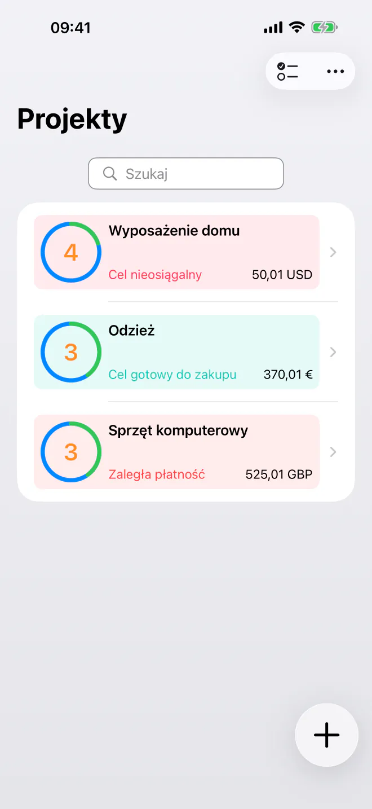
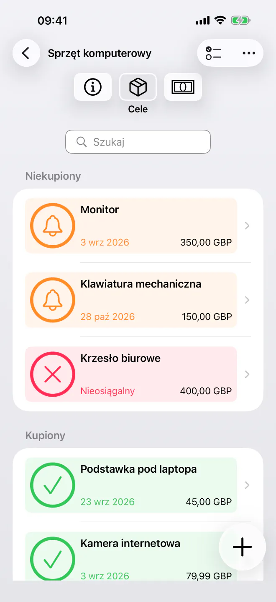
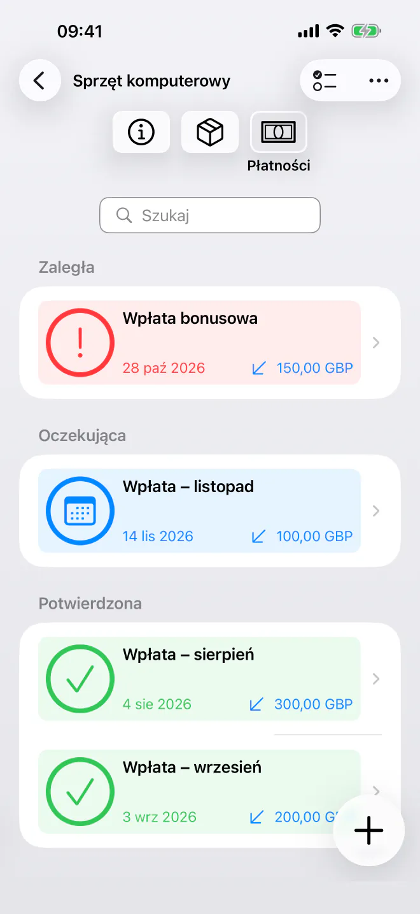
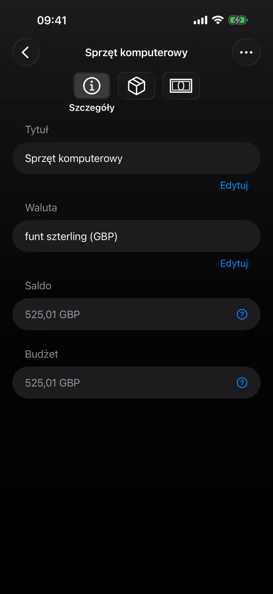

Dowiedz się dokładnie, kiedy możesz kupić
Ustal priorytety celów oszczędnościowych i sprawdź najwcześniejszą datę, kiedy stać cię na każdy zakup. Proste, prywatne planowanie z automatyczną osią czasu. Bez konta.


Przestań zgadywać, kiedy w końcu kupisz kolejną rzecz ze swojej listy. BudgetBear to prosta, prywatna aplikacja, która zamienia twoje cele w czytelną oś czasu zakupów. Dodaj swoje cele, ustal priorytety i zaplanuj wpłaty, a wszystko to w spokojnym, uporządkowanym interfejsie, który szanuje twoją prywatność.
Gotowy, by zacząć planować swoje zakupy? Pobierz BudgetBear już dziś.
Dlaczego warto wybrać BudgetBear
- W 100% prywatnie i pod twoją kontrolą — Twoje dane finansowe zostają wyłącznie na twoim urządzeniu. Bez własnych kont, bez serwerów stron trzecich i bez rejestracji w chmurze, nigdy.
- Minimalistyczna i skupiona na celu — Szybki, łatwy w obsłudze interfejs, stworzony z myślą o tym, co ważne. Bez bałaganu i zbędnej złożoności.
- Dowiedz się dokładnie, kiedy możesz kupić — BudgetBear oblicza najwcześniejszą datę, kiedy będzie cię stać na każdy cel, więc nigdy więcej nie musisz zgadywać.
- Zbudowana wokół priorytetów — Połącz swoje priorytety z zaplanowanymi płatnościami, aby zamienić plan oszczędzania w realistyczną datę zakupu dla każdego celu.
Zamień priorytety w datę zakupu
Przejmij pełną kontrolę nad długoterminowymi wydatkami i celami oszczędnościowymi dzięki systemowi stworzonemu z myślą o przejrzystości.
Listy życzeń według priorytetu
Dodawaj pozycje docelowe (cele) z szacowanymi cenami i przeciągaj je w dokładnie takiej kolejności, jakiej chcesz.
Dynamiczne obliczanie osi czasu
Obserwuj, jak daty zakupów aktualizują się natychmiast, gdy zmieniasz ceny, dodajesz wpłaty lub zmieniasz kolejność celów.
Elastyczne przepływy pieniędzy
Dodawaj jednorazowe wpłaty, aby uzupełnić budżety, lub rejestruj wypłaty, jeśli zdecydujesz się wydać pieniądze gdzie indziej.
Zaplanowane płatności
Twórz cykliczne plany wpłat lub wypłat z datą zakończenia (np. co drugi wtorek lub w dniu wypłaty), aby twoja oś czasu pozostała zautomatyzowana.

Najważniejsze funkcje dla twoich celów oszczędnościowych
- Projekty oszczędnościowe według priorytetu — Grupuj powiązane cele we własne projekty na podróże, elektronikę, remonty domu lub rezerwy awaryjne.
- Inteligentny podział środków — Pieniądze są automatycznie kierowane do twojego celu o najwyższym priorytecie, aż zostanie w pełni sfinansowany, a następnie przechodzą do kolejnego.
- Prosta i minimalistyczna — Przejrzysty interfejs bez rozpraszaczy, stworzony do szybkiego wprowadzania danych, bez zbędnych dodatków i skomplikowanych menu.
- Powtarzanie z datą zakończenia — Ustaw daty rozpoczęcia i zakończenia oraz odstępy dla okresowych wpłat bez skomplikowanych reguł.
Wszechstronne zastosowania dla twoich oszczędności
Od funduszy celowych po większe zakupy: BudgetBear dopasowuje się do twoich celów.
Fundusze celowe
Odkładaj pieniądze na znane przyszłe wydatki, takie jak składki ubezpieczeniowe, świąteczne zakupy czy przegląd samochodu.
Listy życzeń według priorytetu
Uporządkuj to, co chcesz kupić w następnej kolejności, i zobacz, o ile nowa wpłata przybliża datę zakupu.
Większe zakupy
Podziel duże zakupy na łatwe do udźwignięcia okresowe wpłaty i obserwuj, jak twoja oś czasu z czasem się skraca.

Prywatność już w założeniach
Bez subskrypcji. Bez trackerów. Bez własnych kont.
BudgetBear przechowuje wszystko lokalnie: nic nie jest przesyłane, synchronizowane ani udostępniane nikomu. Twoje cele i dane budżetowe nigdy nie opuszczają twojego urządzenia.
Zacznij za darmo, z maksymalnie 3 projektami. Jednorazowy zakup Pro odblokowuje nieograniczoną liczbę projektów, bez subskrypcji, nigdy.
Przejrzyście i skutecznie
Niezależnie od tego, czy odkładasz na wakacje lub nowy gadżet, czy budujesz rezerwę awaryjną, BudgetBear jest twoim niezawodnym towarzyszem w zamianie celów oszczędnościowych w konkretne daty zakupów. Prosty, prywatny i bez konieczności subskrypcji.
Najlepsze narzędzia do produktywności nie przeszkadzają i pozwalają się skupić. Taki jest BudgetBear: bez zbędnych funkcji, bez przytłaczających interfejsów, tylko przejrzysta oś czasu dla twoich celów.